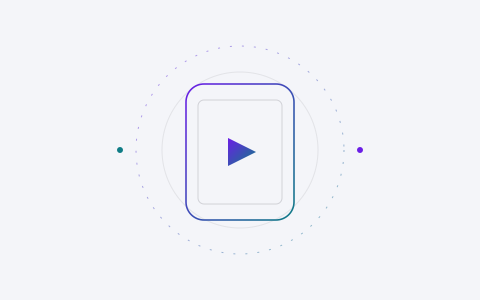
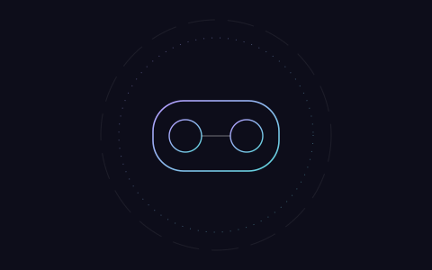

Un espacio de confianza
para crecer
Recursos
Últimos artículos publicados

Pantallas, crecimiento y salud mental infantil
Qué dice la evidencia sobre el tiempo, el contenido, el sueño y el acompañamiento en niños de 2 a 8 años.

Realidad virtual como analgésico no farmacológico
Cómo la inmersión reduce el dolor y la ansiedad en procedimientos médicos, y qué límites tiene la evidencia.

Pantallas con equilibrio, no con prohibición
Reglas del hogar y prácticas en la escuela para un uso de pantallas adecuado a la edad.